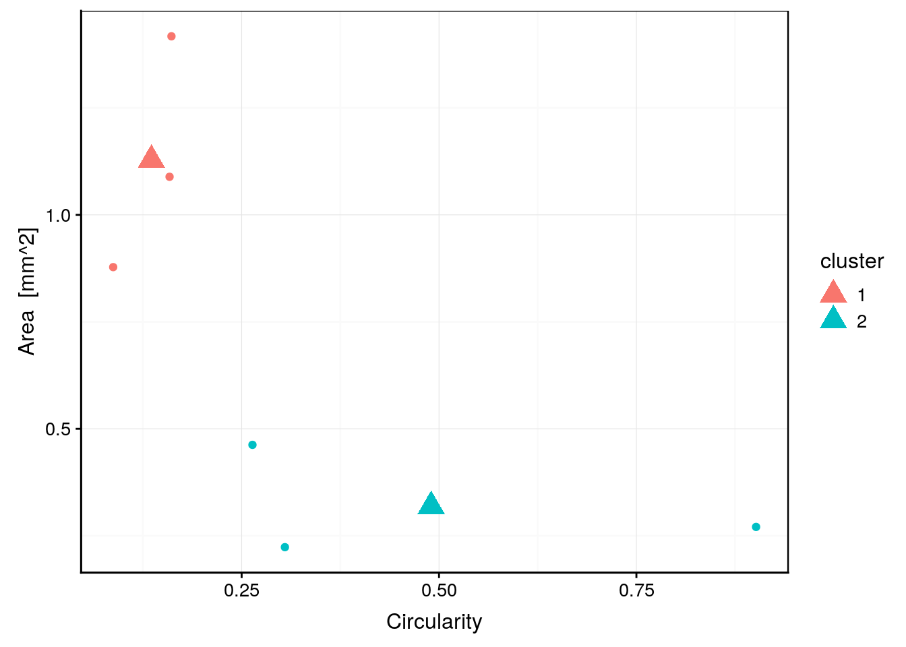
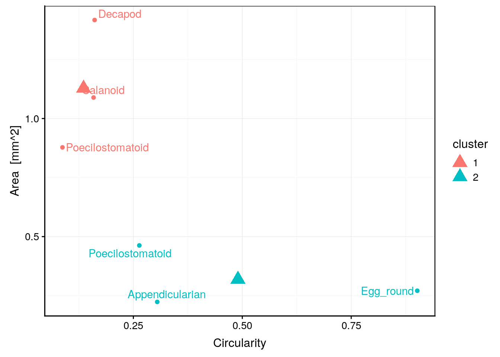
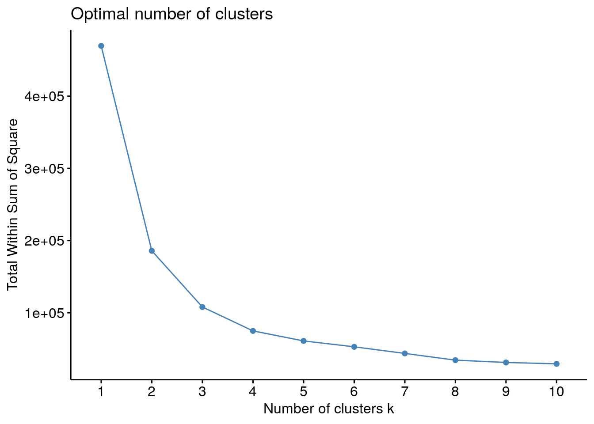

6.1 K-moyennes
Les k-moyennes (ou “k-means” en anglais) représentent une autre façon de regrouper les individus d’un tableau multivarié. Par rapport à la CAH, cette technique est généralement moins efficace, mais elle a l’avantage de permettre le regroupement d’un très grand nombre d’individus (gros jeu de données), là où la CAH nécessiterait trop de temps de calcul et de mémoire vive. Il est donc utile de connaitre cette seconde technique à utiliser comme solution de secours lorsque le dendrogramme de la CAH devient illisible sur de très gros jeux de données.
Le principe des k-moyennes est très simple :
- L’utilisateur choisi le nombre de groupes k qu’il veut obtenir à l’avance.
- La position des k centres est choisie au hasard au début.
- Les individus sont attribués aux k groupes en fonction de leurs distances aux centres (attribution au groupe de centre le plus proche).
- Les k centres sont replacés au centre de gravité des groupes ainsi obtenus.
- Les individus sont réaffectés en fonction de leurs distances à ces nouveaux centres.
- Si au moins un individu a changé de groupe, le calcul est réitéré. Sinon, nous considérons avoir atteint la configuration finale.
La technique est superbement expliquée et illustrée dans la vidéo suivante :
6.1.1 Exemple simple
Afin de comparer la classification par k-moyennes à celle par CAH, nous reprendrons ici le même jeu de données zooplankton.
zoo <- read("zooplankton", package = "data.io")
zoo# # A tibble: 1,262 x 20
# ecd area perimeter feret major minor mean mode min max std_dev
# <dbl> <dbl> <dbl> <dbl> <dbl> <dbl> <dbl> <dbl> <dbl> <dbl> <dbl>
# 1 0.770 0.465 4.45 1.32 1.16 0.509 0.363 0.036 0.004 0.908 0.231
# 2 0.700 0.385 2.32 0.728 0.713 0.688 0.361 0.492 0.024 0.676 0.183
# 3 0.815 0.521 4.15 1.33 1.11 0.598 0.308 0.032 0.008 0.696 0.204
# 4 0.785 0.484 4.44 1.78 1.56 0.394 0.332 0.036 0.004 0.728 0.218
# 5 0.361 0.103 1.71 0.739 0.694 0.188 0.153 0.016 0.008 0.452 0.110
# 6 0.832 0.544 5.27 1.66 1.36 0.511 0.371 0.02 0.004 0.844 0.268
# 7 1.23 1.20 15.7 3.92 1.37 1.11 0.217 0.012 0.004 0.784 0.214
# 8 0.620 0.302 3.98 1.19 1.04 0.370 0.316 0.012 0.004 0.756 0.246
# 9 1.19 1.12 15.3 3.85 1.34 1.06 0.176 0.012 0.004 0.728 0.172
# 10 1.04 0.856 7.60 1.89 1.66 0.656 0.404 0.044 0.004 0.88 0.264
# # … with 1,252 more rows, and 9 more variables: range <dbl>, size <dbl>,
# # aspect <dbl>, elongation <dbl>, compactness <dbl>, transparency <dbl>,
# # circularity <dbl>, density <dbl>, class <fct>Commençons par l’exemple simplissime de la réalisation de deux groupes à partir de six individus issus de ce jeu de données, comme nous l’avons fait avec la CAH :
zoo %>.%
select(., -class) %>.% # Elimination de la colonne class
slice(., 13:18) -> zoo6 # Récupération des lignes 13 à 18
zoo6_kmeans <- kmeans(zoo6, centers = 2)
zoo6_kmeans# K-means clustering with 2 clusters of sizes 3, 3
#
# Cluster means:
# ecd area perimeter feret major minor mean
# 1 1.1926500 1.1279667 10.346667 2.201133 1.677067 0.8596333 0.3217333
# 2 0.6292647 0.3188667 3.224133 1.159200 1.096433 0.4023333 0.1871667
# mode min max std_dev range size aspect
# 1 0.3533333 0.00400000 0.8986667 0.2620000 0.8946667 1.2683500 0.5149422
# 2 0.1026667 0.01066667 0.5400000 0.1166667 0.5293333 0.7493833 0.4753843
# elongation compactness transparency circularity density
# 1 23.046713 7.987806 0.06173831 0.1357000 0.37630000
# 2 6.333315 2.727708 0.14732060 0.4900333 0.06943333
#
# Clustering vector:
# [1] 2 1 2 1 1 2
#
# Within cluster sum of squares by cluster:
# [1] 200.03837 54.18647
# (between_SS / total_SS = 68.1 %)
#
# Available components:
#
# [1] "cluster" "centers" "totss" "withinss"
# [5] "tot.withinss" "betweenss" "size" "iter"
# [9] "ifault"Nous voyons que la fonction kmeans() effectue notre classification. Nous lui fournissons le tableau de départ et spécifions le nombre k de groupes souhaités via l’argument centers =. Ne pas oublier d’assigner le résultat du calcul à une nouvelle variable, ici zoo6_kmeans, pour pouvoir l’inspecter et l’utiliser par la suite. L’impression du contenu de l’objet nous donne plein d’information dont :
- le nombre d’individus dans chaque groupe (ici 3 et 3),
- la position des centres pour les k groupes dans
Cluster means, - l’appartenance aux groupes dans
Cluster vectors(dans le même ordre que les lignes du tableau de départ), - La comparaison des sommes des carrés entre groupes (nous détaillerons ceci plus loin),
- et enfin, la liste des composants accessibles via l’opérateur
$; par exemple, pour obtenir les groupes (opération similaire àcutree()pour la CAH), nous ferons :
zoo6_kmeans$cluster# [1] 2 1 2 1 1 2Voici quelques fonctions complémentaires qui nous seront utiles pour manipuler facilement le contenu de l’objet kmeans obtenu. Vous pouvez copier-coller ces fonctions dans votre rapport pour les utiliser. Il n’est pas nécessaire de comprendre le code de ces fonctions, mais ceux qui souhaitent progresser dans l’utilisation de R peuvent le faire naturellement.
# Récupère un tableau localisant les centres
get_centers <- function(x, name = "cluster", ...)
UseMethod("get_centers")
get_centers.default <- function(x, name = "cluster", ...)
stop("Don't know how to extract centers from x")
get_centers.kmeans <- function(x, name = "cluster", ...)
rownames_to_column(as_tibble(x$centers), var = name)
# Rajoute une colonne d'appartenance aux groupes dans le tableau de données
add_cluster <- function(x, data, name = "cluster", ...)
UseMethod("add_cluster")
add_cluster.default <- function(x, data, name = "cluster", ...)
stop("Don't know how to add clusters from x")
add_cluster.kmeans <- function(x, data, name = "cluster", ...) {
if (!inherits(data, "data.frame"))
stop("'data' must be a data frame")
if (length(x$cluster) != nrow(data))
stop("'data' number of rows does not match length of kmeans clusters")
data[[name]] <- factor(x$cluster)
data
}
# Crée un graphique qui suggère le nombre k optimal de groupes
nb_clusters <- function(x, method = "wss",
k.max = min(nrow(x) - 1, 10L), ...)
factoextra::fviz_nbclust(x, kmeans, method = method,
k.max = k.max, ...)La fonction
get_centers()retourne undata.frameavec la position des centres des différents groupes.La fonction
add_cluster()ajoute une colonne nommée par défaut “cluster” dans le tableau de données. Le nom de cette nouvelle colonne peut être changé via l’argumentname =.La fonction
nb_clusters()propose un graphique qui aide au choix optimal de k. Il s’agit en fait de la fonctionfviz_nbclust()du packagefactoextralégèrement reparamétrée pour fonctionner aveckmeans()sans devoir le spécifier à chaque fois.
Utilisons cette dernière fonction.
nb_clusters(zoo6)
Le graphique obtenu montre la décroissance de la somme des carrés des distances intra-groupes en fonction de k. Avec k = 1, nous considérons toutes les données dans leur ensemble et nous avons simplement la somme des carrés des distances euclidiennes entre tous les individus et le centre de gravité du nuage de points dont les coordonnées sont les moyennes de chaque variable. C’est le point de départ qui nous indique de combien les données sont dispersées (la valeur absolue de ce nombre n’est pas importante).
Ensuite, avec k croissant, notre objectif est de faire des regroupement qui diminuent la variance intra-groupe autant que possible, ce que nous notons par la diminution de la somme des carrés intra-groupes (la variance du groupe est, en effet, la somme des carrés des distances enclidiennes entre les points et le centre du groupe, divisée par les degrés de liberté).
Nous recherchons ici des sauts importants dans la décroissance de la somme des carrés, tout comme dans le dendrogramme obtenu par la CAH nous recherchions des sauts importants dans les regroupements (hauteur des barres verticales du dendrogramme). Nous observons ici un saut important pour k = 2, puis une diminution moins forte de k = 3 à k = 5. Ceci suggère que nous pourrions considérer deux groupes.
Le nombre de groupes porposé par nb_clusters() n’est qu’indicatif ! Si vous avez par ailleurs d’autres informations qui vous suggèrent un regroupement différent, ou si vous voulez essayer un regroupement plus ou moins détaillé par rapport à ce qui est proposé, c’est tout aussi correct.
nb_clusters() propose d’ailleurs deux autres méthodes pour déterminer le nombre optimal de groupes k, avec method = "silhouette" ou method = "gap_stat". Voyez l’aide en ligne de la fonction de départ en faisant ?factoextra::fviz_nbclust. Ces différentes méthodes peuvent d’ailleurs suggérer des regroupements différents pour les mêmes données… preuve qu’il n’y a pas une et une seule solution optimale !
A ce stade, nous pouvons collecter les groupes et les ajouter à notre tableau de données. Pour la CAH, vous avez déjà remarqué que rajouter ces groupes dans le tableau de départ peut mener à des effets surprenants si nous relançons ensuite l’analyse sur le tableau ainsi complété15. Donc, nous prendrons soin de placer les données ainsi complétées de la colonne cluster dans un tableau différent nommé zoo6b.
zoo6b <- add_cluster(zoo6_kmeans, zoo6)
names(zoo6b)# [1] "ecd" "area" "perimeter" "feret"
# [5] "major" "minor" "mean" "mode"
# [9] "min" "max" "std_dev" "range"
# [13] "size" "aspect" "elongation" "compactness"
# [17] "transparency" "circularity" "density" "cluster"Comme vous pouvez le constater, une nouvelle colonne nommée cluster a été ajoutée au tableau en dernière position. Elle contient ceci :
zoo6b$cluster# [1] 2 1 2 1 1 2
# Levels: 1 2C’est le contenu de zoo_kmeans$cluster, mais transformé en variable factor.
class(zoo6b$cluster)# [1] "factor"Nous pouvons enfin utiliser get_centers() pour obtenir un tableau avec les coordonnées des k centres. Nous l’enregistrerons dans la variable zoo6_centers :
zoo6_centers <- get_centers(zoo6_kmeans)
zoo6_centers# # A tibble: 2 x 20
# cluster ecd area perimeter feret major minor mean mode min max
# <chr> <dbl> <dbl> <dbl> <dbl> <dbl> <dbl> <dbl> <dbl> <dbl> <dbl>
# 1 1 1.19 1.13 10.3 2.20 1.68 0.860 0.322 0.353 0.004 0.899
# 2 2 0.629 0.319 3.22 1.16 1.10 0.402 0.187 0.103 0.0107 0.540
# # … with 9 more variables: std_dev <dbl>, range <dbl>, size <dbl>,
# # aspect <dbl>, elongation <dbl>, compactness <dbl>, transparency <dbl>,
# # circularity <dbl>, density <dbl>La première colonne du tableau est également nommée cluster. C’est important de lui donner le même nom que lors de l’appel à add_cluster() (argument name = dans les deux cas) si le résultat est à utiliser dans un même graphique. En effet, nous avons maintenant tout ce qu’il faut pour représenter graphiquement les regroupements effectués par les k-moyennes en colorant les points en fonction de la nouvelle variable cluster.
chart(data = zoo6b, area ~ circularity %col=% cluster) +
geom_point() + # Affiche les points représentant les individus
geom_point(data = zoo6_centers, size = 5, shape = 17) # Ajoute les centres
Comparez avec le graphique équivalent au module précédent consacré à la CAH. Outre que l’ordre des groupes est inversé et que les données n’ont pas été standardisées ici, un point est classé dans un groupe différent par les deux méthodes. Il s’agit du point ayant environ 0.25 de circularité et 0.5 de surface. Comme nous connaissons par ailleurs la classe à laquelle appartient chaque individu, nous pouvons la récupérer comme colonne supplémentaire du tableau zoo6b et ajouter cette information sur notre graphique.
zoo6b$class <- zoo$class[13:18]
zoo6_centers$class <- "" # Ceci est nécessaire pour éviter le label des centres
chart(data = zoo6b, area ~ circularity %col=% cluster %label=% class) +
geom_point() +
ggrepel::geom_text_repel() + # Ajoute les labels intelligemment
geom_point(data = zoo6_centers, size = 5, shape = 17)
Nous constatons que le point classé différemment est un “Poecilostomatoïd”. Or, l’autre groupe des k-moyennes contient aussi un individu de la même classe. Donc, CAH a mieux classé notre plancton que les k-moyennes dans le cas présent. Ce n’est pas forcément toujours le cas, mais souvent CAH est meilleure… surtout que nous avons plus de possibilités en choisissant la transformation ou non des données, la métrique de distances, et enfin la méthode pour agglomérer les groupes. Autant d’options utiles à la CAH que nous n’avons pas pour les k-moyennes.
Un dernier point est important à mentionner. Comme les k-moyennes partent d’une position aléatoire des k centres, le résultat final peut varier et n’est pas forcément optimal. Pour éviter cela, nous pouvons indiquer à kmeans() d’essayer différentes situations de départ via l’argument nstart =. Par défaut, nous prenons une seule situation aléatoire de départ nstart = 1, mais en indiquant une valeur plus élevée pour cet argument, il est possible d’essayer plusieurs situations de départ et ne garder que le meilleur résultat final. Cela donne une analyse plus robuste et plus reproductible… mais le calcul est naturellement plus long.
kmeans(zoo6, centers = 2, nstart = 50) # 50 positions de départ différentes# K-means clustering with 2 clusters of sizes 3, 3
#
# Cluster means:
# ecd area perimeter feret major minor mean
# 1 0.6292647 0.3188667 3.224133 1.159200 1.096433 0.4023333 0.1871667
# 2 1.1926500 1.1279667 10.346667 2.201133 1.677067 0.8596333 0.3217333
# mode min max std_dev range size aspect
# 1 0.1026667 0.01066667 0.5400000 0.1166667 0.5293333 0.7493833 0.4753843
# 2 0.3533333 0.00400000 0.8986667 0.2620000 0.8946667 1.2683500 0.5149422
# elongation compactness transparency circularity density
# 1 6.333315 2.727708 0.14732060 0.4900333 0.06943333
# 2 23.046713 7.987806 0.06173831 0.1357000 0.37630000
#
# Clustering vector:
# [1] 1 2 1 2 2 1
#
# Within cluster sum of squares by cluster:
# [1] 54.18647 200.03837
# (between_SS / total_SS = 68.1 %)
#
# Available components:
#
# [1] "cluster" "centers" "totss" "withinss"
# [5] "tot.withinss" "betweenss" "size" "iter"
# [9] "ifault"Dans ce cas simple, cela ne change pas grand chose. Mais avec un plus gros jeu de données plus complexe, cela peut être important.
6.1.2 Classification du zooplancton
Maintenant que nous savons utiliser kmeans() et les fonctions annexes, nous pouvons classer le jeu de données zoo tout entier.
nb_clusters(select(zoo, -class))
Nous observons un saut maximal pour k = 2, mais le saut pour k = 3 est encore conséquent. Afin de comparer avec ce que nous avons fait par CAH, nous utiliserons donc k = 3. Enfin, comme un facteur aléatoire intervient, qui définira au final le numéro des groupes, nous utilisons set.seed() pour rendre l’analyse reproductible. Pensez à donner une valeur différente à cette fonction pour chaque utilisation ! Et pensez aussi à éliminer les colonnes non numériques à l’aide de select().
set.seed(562)
zoo_kmeans <- kmeans(select(zoo, -class), centers = 3, nstart = 50)
zoo_kmeans# K-means clustering with 3 clusters of sizes 786, 91, 385
#
# Cluster means:
# ecd area perimeter feret major minor mean
# 1 0.6664955 0.431915 3.575374 1.134705 0.9744768 0.4780780 0.2388065
# 2 1.3774670 1.998097 19.653860 4.063837 2.1465758 0.9602846 0.1488495
# 3 0.9715857 1.009902 9.197299 2.668022 1.8468984 0.6194652 0.1723774
# mode min max std_dev range size aspect
# 1 0.09256997 0.007094148 0.7269109 0.1842660 0.7198168 0.7262774 0.5372808
# 2 0.02470330 0.004000000 0.7013187 0.1472286 0.6973187 1.5534302 0.5362249
# 3 0.04455065 0.004207792 0.6315844 0.1512922 0.6273766 1.2331818 0.5349924
# elongation compactness transparency circularity density
# 1 7.184451 3.002093 0.07385014 0.42917214 0.09349338
# 2 61.837019 20.325398 0.09737903 0.05186813 0.31140879
# 3 27.898079 9.529156 0.11719954 0.11197351 0.16938468
#
# Clustering vector:
# [1] 1 1 1 1 1 1 2 1 2 1 1 3 1 3 1 3 3 1 2 1 1 1 1 3 3 1 1 3 1 1 1 1 1 1
# [35] 3 1 3 1 1 1 1 1 1 1 1 1 1 1 1 1 1 1 1 1 1 1 1 3 1 1 3 1 1 3 1 3 3 1
# [69] 3 1 1 1 1 2 1 1 1 1 1 3 1 1 1 1 1 2 1 1 3 1 1 3 1 2 1 1 1 1 1 1 1 1
# [103] 1 1 3 1 1 1 1 1 1 1 1 1 1 1 1 1 1 1 1 1 1 1 1 1 1 1 3 1 1 1 1 1 1 1
# [137] 1 1 1 1 1 3 1 1 2 3 2 3 1 1 1 1 1 3 3 3 3 3 1 2 1 1 1 1 1 1 1 3 1 1
# [171] 1 1 1 1 1 1 1 1 1 1 1 1 1 3 1 1 1 1 1 1 1 1 3 1 1 1 1 1 1 1 1 1 1 1
# [205] 1 3 1 1 1 1 1 1 1 1 1 3 1 1 1 1 1 1 1 1 1 1 1 1 1 1 1 1 1 1 1 1 1 1
# [239] 1 1 1 1 1 3 1 1 1 1 1 1 1 3 1 1 1 1 1 1 1 1 1 1 1 1 1 1 1 1 2 2 2 3
# [273] 3 2 1 1 3 1 3 3 1 3 1 1 2 1 1 2 3 2 3 3 1 1 1 1 3 3 2 1 3 1 3 3 1 3
# [307] 3 3 2 1 3 3 2 1 3 2 2 1 2 3 3 3 1 1 3 1 1 3 1 1 1 1 1 3 1 2 1 1 1 3
# [341] 1 1 1 1 1 1 3 3 3 1 3 3 1 1 1 1 1 1 3 1 1 1 1 1 1 1 1 3 1 3 1 1 1 1
# [375] 3 1 1 1 1 1 1 3 3 1 1 1 1 1 3 3 1 1 3 1 3 3 1 3 3 1 1 1 1 1 1 1 1 3
# [409] 1 1 1 3 3 1 1 1 1 1 1 1 3 3 3 2 1 3 3 1 1 1 3 3 3 1 1 1 1 2 1 1 3 3
# [443] 2 1 3 1 3 1 3 1 3 1 1 3 1 3 1 3 3 1 1 1 1 1 3 1 1 3 1 1 1 3 1 1 3 1
# [477] 1 1 3 1 1 1 1 1 1 1 1 3 1 3 3 3 1 3 1 3 1 3 3 3 1 1 1 1 1 1 1 1 3 3
# [511] 1 3 2 3 1 2 1 1 3 3 3 1 3 1 1 1 2 1 2 2 3 1 3 1 1 1 3 1 1 1 1 3 3 1
# [545] 1 1 3 3 1 1 3 1 3 1 1 3 2 3 1 1 1 1 2 1 3 1 1 1 1 1 1 1 1 1 1 1 1 1
# [579] 1 2 3 3 3 2 1 2 3 3 2 1 3 3 3 1 1 3 3 2 1 1 1 1 1 1 1 1 1 3 1 3 3 1
# [613] 1 1 1 1 1 1 2 1 1 1 1 1 3 3 2 3 1 3 2 3 1 3 1 3 3 1 1 1 1 3 3 3 3 3
# [647] 3 3 1 1 3 1 1 1 1 1 1 1 3 3 3 3 3 3 1 2 3 3 3 3 1 1 3 3 1 1 1 1 3 3
# [681] 3 1 1 1 1 1 1 3 1 1 1 3 1 1 3 3 3 3 3 1 1 2 1 1 2 3 1 3 1 1 3 2 2 3
# [715] 1 1 2 3 1 2 3 3 3 2 3 1 3 2 1 3 1 1 2 3 1 2 1 2 3 3 3 1 2 1 3 3 2 3
# [749] 3 1 1 3 1 3 3 1 1 1 1 1 3 3 3 1 1 1 1 3 3 3 1 1 1 1 3 1 1 1 3 1 1 3
# [783] 1 3 1 1 1 3 1 1 3 1 1 3 1 1 3 1 1 1 3 1 3 2 3 1 1 3 3 2 1 3 1 1 3 3
# [817] 3 1 1 1 3 1 1 1 1 1 1 1 1 1 3 1 3 3 1 1 1 3 1 3 3 1 3 1 1 1 1 1 1 1
# [851] 3 3 3 1 1 3 3 3 1 1 1 1 1 1 3 1 3 2 3 1 3 1 3 1 1 2 1 2 1 3 3 3 3 3
# [885] 3 3 1 1 3 1 1 1 3 2 1 3 1 1 1 1 3 1 3 1 1 1 3 3 1 3 1 1 3 1 1 3 1 2
# [919] 1 3 3 1 1 3 3 1 1 1 2 3 2 3 2 3 3 3 2 1 3 2 3 3 3 1 3 3 3 3 3 3 2 3
# [953] 3 1 3 1 1 1 1 1 1 3 1 1 1 1 1 1 3 1 1 2 1 2 1 1 1 1 3 3 3 3 1 1 1 2
# [987] 2 1 3 3 1 2 1 3 3 2 3 3 3 3 1 3 2 3 2 3 2 1 3 1 1 1 1 3 3 1 3 1 2 3
# [1021] 1 1 3 3 3 3 3 1 3 3 3 1 1 3 3 1 2 3 3 3 2 1 3 2 1 3 3 2 1 1 3 1 1 1
# [1055] 3 1 1 1 1 1 1 1 1 3 3 3 3 3 2 3 3 3 3 1 3 3 3 1 3 2 1 3 3 3 2 3 1 1
# [1089] 1 1 1 2 1 3 3 1 2 2 3 1 1 3 3 1 1 2 3 3 3 3 3 1 1 1 2 1 1 1 1 1 1 1
# [1123] 3 1 1 1 3 1 3 3 1 1 3 1 1 1 1 1 1 3 3 1 3 3 3 3 2 1 1 1 1 3 1 1 1 1
# [1157] 1 1 1 1 1 1 1 1 1 1 1 3 3 3 3 3 1 1 3 3 1 1 1 3 1 1 1 1 3 1 1 1 1 1
# [1191] 1 1 1 1 1 1 1 1 1 1 3 1 1 1 1 1 1 1 1 1 1 1 1 1 1 1 3 1 1 1 1 1 1 1
# [1225] 1 1 1 1 1 1 1 1 1 1 1 1 1 1 1 1 1 1 3 1 1 1 1 1 1 1 1 1 1 1 1 1 1 3
# [1259] 3 3 3 3
#
# Within cluster sum of squares by cluster:
# [1] 24356.96 43792.25 39813.31
# (between_SS / total_SS = 77.0 %)
#
# Available components:
#
# [1] "cluster" "centers" "totss" "withinss"
# [5] "tot.withinss" "betweenss" "size" "iter"
# [9] "ifault"Récupérons les clusters dans zoob
zoob <- add_cluster(zoo_kmeans, zoo)Et enfin, effectuons un graphique similaire à celui réalisé pour la CAH au module précédent. À noter que nous pouvons ici choisir n’importe quelle paire de variables quantitatives pour représenter le nuage de points. Nous ajoutons des ellipses pour matérialiser les groupes à l’aide de stat_ellipse(). Elles contiennent 95% des points du groupe à l’exclusion des extrêmes. Enfin, comme il y a beaucoup de points, nous choisissons de les rendre semi-transparents avec l’argument alpha = 0.2 pour plus de lisibilité du graphique.
chart(data = zoob, compactness ~ ecd %col=% cluster) +
geom_point(alpha = 0.2) +
stat_ellipse() +
geom_point(data = get_centers(zoo_kmeans), size = 5, shape = 17)
Nous observons ici un regroupement beaucoup plus simple qu’avec la CAH, essentiellement stratifié de bas en haut en fonction de la compacité des points (Compactness). La tabulation des clusters en fonction des classes connues par ailleurs montre aussi que les k-moyennes les séparent moins bien que ce qu’a pu faire la CAH :
table(zoob$class, zoob$cluster)#
# 1 2 3
# Annelid 38 6 6
# Appendicularian 21 0 15
# Calanoid 82 41 165
# Chaetognath 6 0 45
# Cirriped 14 0 8
# Cladoceran 50 0 0
# Cnidarian 13 3 6
# Cyclopoid 5 5 40
# Decapod 117 0 9
# Egg_elongated 50 0 0
# Egg_round 49 0 0
# Fish 50 0 0
# Gastropod 50 0 0
# Harpacticoid 1 9 29
# Malacostracan 54 26 41
# Poecilostomatoid 143 1 14
# Protist 43 0 7Le cluster numéro 2 n’est pas vraiment défini en terme des classes de plancton car aucune classe ne s’y trouve de manière majoritaire. Le groupe numéro 1 contient la majorité des items de diverses classes, alors que le groupe 3 a une majorité de calanoïdes et d’harpacticoïdes (différents copépodes). Globalement, le classement a un sens, mais est moins bien corrélé avec les classes de plancton que ce que la CAH nous a fourni.
Pour en savoir plus
Il existe une approche mixte qui mèle la CAH et les k-moyennes. Cette approche est intéressante pour les gros jeux de données. Le problématique est expliquée ici, et l’implémentation dans la fonction factoextra::hkmeans() est détaillée ici (en anglais).
Nous vous avons proposé exprès de rajouter les groupes dans le tableau de départ pour que vous soyez confronté à ce problème. Ici, nous proposons donc une autre façon de travailler qui l’évite en assignant le résultat dans une autre variable.↩